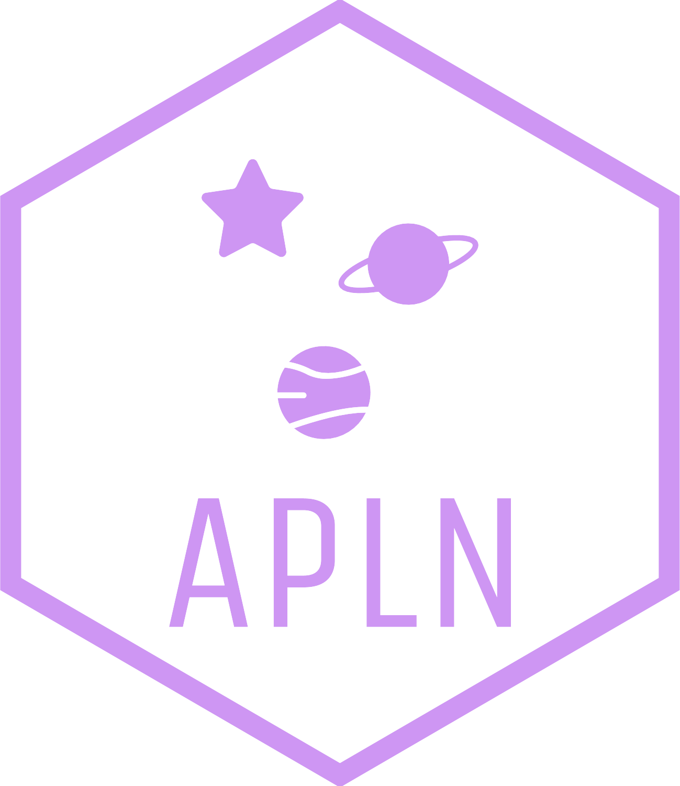
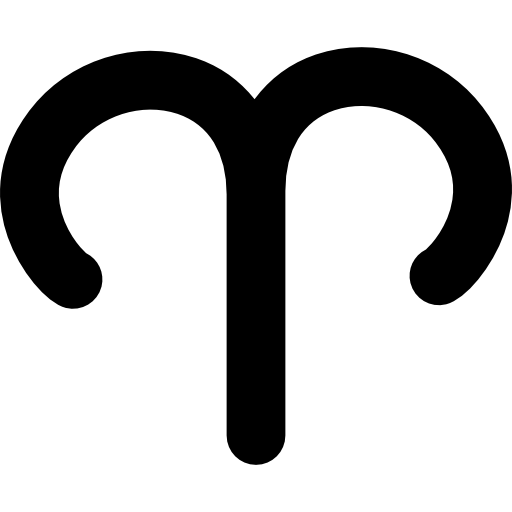
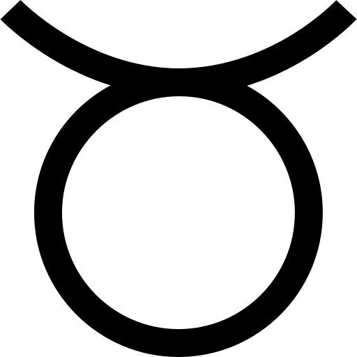
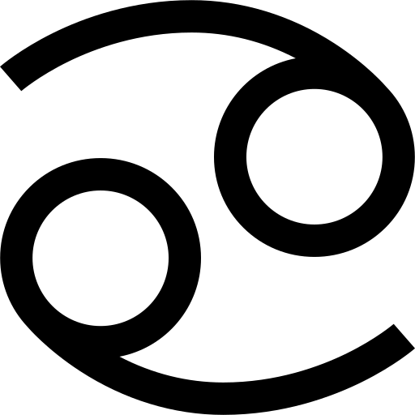
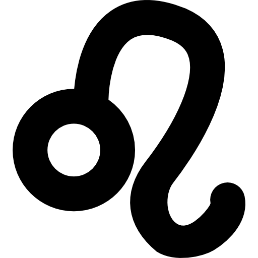
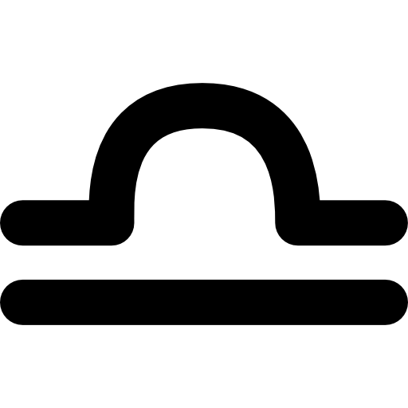
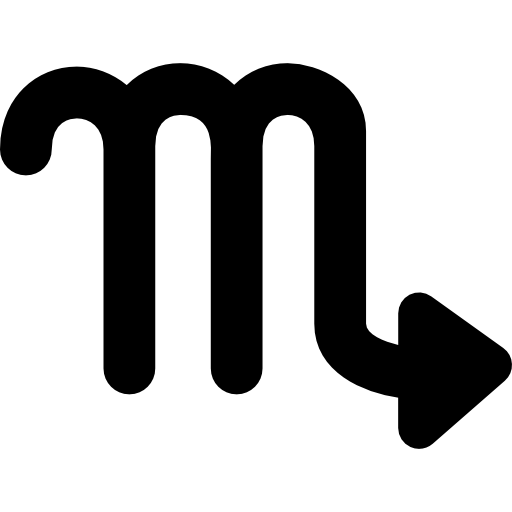
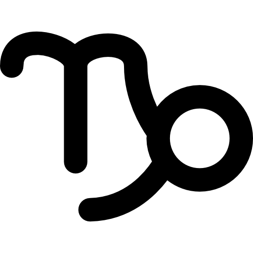
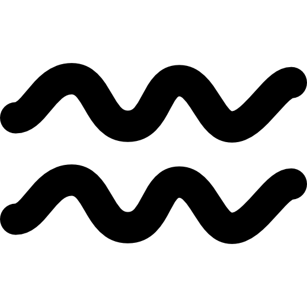
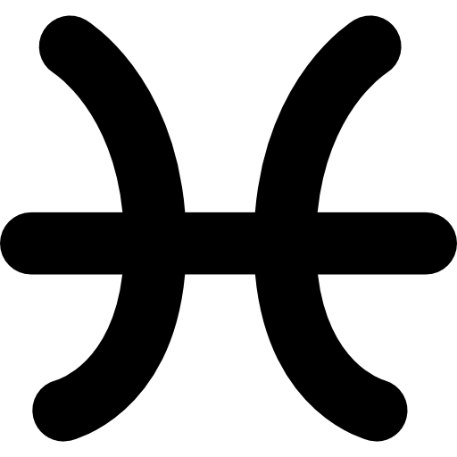

Vous êtes null en astro et vous vous poser une multitude questions par rapport à votre vie? Alors ce site est fait pour vous ! Inscrivez-vous dès maintenant pour en savoir plus sur vous et sur le monde qui vous entoure !








